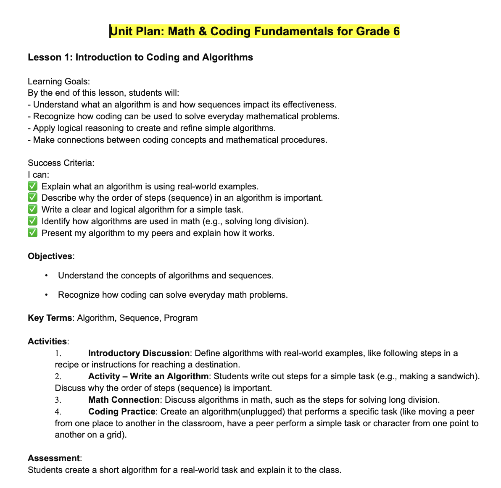
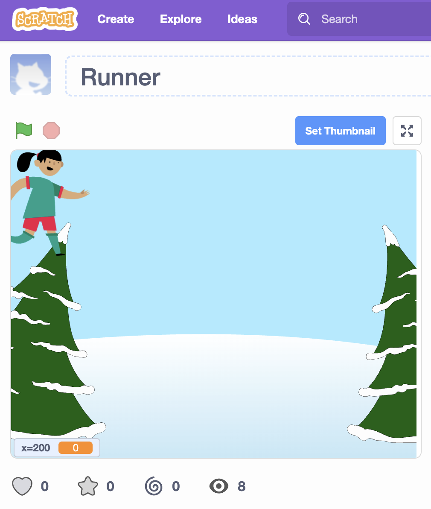

Artifact 1: PLC Leadership – Math Curriculum & Coding
Evidence
Led a Professional Learning Community to revise the mathematics curriculum to include coding.
Supported staff through initial hesitation by modelling lessons, co-learning, and guided
instruction using slideshows and hands-on learning opportunities.
OLF Alignment
Setting Directions · Building Relationships and Developing People · Leading the Instructional Program
Reflection
I responded to staff hesitation by prioritizing psychological safety, gradual skill-building, and shared ownership of learning.
I acknowledged that coding was unfamiliar and potentially intimidating for some staff, which helped normalize discomfort and reduce resistance.
Rather than positioning myself as the sole expert, I adopted a co-learning approach that emphasized growth, experimentation, and professional risk-taking.
This helped shift the mindset from “mastery first” to “learning in progress,” aligning with a culture of continuous improvement.
The strategies that most effectively built confidence and collective efficacy included modelling classroom-ready lessons, providing scaffolded instructional resources (such as step-by-step slideshows and guided activities), and facilitating hands-on collaborative practice during PLC sessions.
Teachers were able to immediately experience success as learners before transferring strategies into their own classrooms. Peer sharing of small wins further strengthened collective efficacy, as staff began to see the impact on student engagement and problem-solving skills.
Over time, this approach fostered increased instructional risk-taking, stronger collaboration, and greater staff ownership of the revised mathematics curriculum.
Impact
Teachers developed confidence with coding concepts and embedded them into curriculum planning and lesson instruction.
Artifact 2: PLC Unit Deliverables
Artifact 2: Grade 6 Math & Coding Fundamentals – Unit Plan

This artifact demonstrates the integration of coding concepts into the Grade 6 mathematics curriculum. The lesson focuses on algorithms, sequencing, and problem-solving through unplugged coding activities, helping students make connections between computational thinking and mathematical procedures.
Evidence
Samples of collaboratively developed unit plans and assessments created by teachers during
the PLC process.
OLF Alignment
Leading the Instructional Program · Developing the Organization
Reflection
The unit plans and assessments produced through the PLC process highlight a shift toward shared ownership of curriculum and instructional practice. Teachers were actively involved in co-constructing learning goals, success criteria, and assessment approaches, which fostered a sense of collective responsibility for student learning. The alignment across units indicates that instructional decisions were grounded in shared understanding rather than individual preference. As a leader, this reinforced the importance of creating structures that support collaboration, reduce variability in instruction, and promote equitable learning experiences for students.
Impact
Increased instructional coherence across grades.
Artifact 3: Teacher Coding Game Projects

Evidence
All mathematics teachers collaboratively designed and created coding-based games as a culminating task following a series of PLC sessions focused on developing both foundational coding knowledge and instructional application. This artifact represents the transition from guided learning to independent and collaborative creation, where teachers applied their understanding of algorithms, sequencing, and problem-solving within an authentic task.
OLF Alignment
Leading the Instructional Program · Building Relationships and Developing People
Reflection
This culminating experience highlighted the importance of experiential professional learning in building both competence and confidence. By positioning teachers as learners first, and then as designers of meaningful tasks, the PLC created a space where risk-taking was normalized and supported. Teachers were required to grapple with challenges, iterate on their ideas, and collaborate with colleagues, mirroring the same learning processes expected of students. This approach shifted teacher mindset from compliance-based implementation to authentic engagement with the material.
A key leadership takeaway was the value of gradual release of responsibility within professional learning structures. Early sessions focused on modelling and guided practice, while later sessions allowed for increased autonomy and creativity. This scaffolded approach reduced anxiety and supported sustained engagement, ultimately leading to greater ownership of both the content and the instructional approach.
Impact
Teachers demonstrated significantly increased confidence in both coding and instructional risk-taking. As a result, coding has been meaningfully and consistently integrated into the mathematics program across grades. This represents a shift from minimal or inconsistent implementation to a more coherent and embedded approach that supports student engagement, problem-solving, and computational thinking.
Artifact 4: PD Leadership – Securly Classroom
Evidence
Designed and facilitated two professional development sessions focused on the implementation and effective use of the Securly Classroom platform. Sessions included live demonstrations, guided practice, and opportunities for teachers to explore features within the context of their own classroom needs.
OLF Alignment
Managing the Organization · Leading the Instructional Program
Reflection
These professional learning sessions reinforced the importance of aligning technological tools with instructional purpose. Rather than positioning Securly as solely a classroom management tool, the sessions emphasized its role in supporting student engagement, accountability, and instructional flow. By grounding the training in real classroom scenarios, teachers were able to immediately see the relevance and applicability of the platform.
A critical leadership consideration was differentiating support based on teacher readiness and comfort with technology. Some staff required foundational guidance, while others were ready to explore more advanced features. Providing multiple entry points and ongoing support helped ensure that all teachers experienced success. Additionally, embedding time for hands-on practice allowed teachers to build confidence in a low-risk environment, which increased the likelihood of sustained implementation.
Impact
All middle school teachers are now confident using Securly Classroom and incorporate it into their practice either daily or as needed. This has led to improved classroom management, increased student on-task behaviour, and more efficient use of instructional time. The consistency of use across classrooms has also contributed to a more cohesive student experience.
Artifact 5: Mentorship of New Staff
Evidence
Mentored new staff members over a ten-year period, providing ongoing support in instructional practice, classroom management, and integration into the school community. This included formal meetings, informal check-ins, co-planning opportunities, and modelling of effective practices.
OLF Alignment
Building Relationships and Developing People
Reflection
Mentorship has been a central component of my leadership practice, grounded in the understanding that teacher development is both relational and ongoing. Supporting new staff requires not only the sharing of knowledge, but also the intentional building of trust and psychological safety. By creating space for questions, uncertainty, and reflection, I was able to support new teachers in developing confidence and a sense of belonging within the school community.
An important aspect of this work was recognizing that each educator brings different experiences, strengths, and needs. Differentiating mentorship—through modelling, co-teaching, or reflective dialogue—allowed for more meaningful and responsive support. This process also reinforced the importance of listening as a leadership skill, ensuring that support was guided by teacher voice rather than assumption.
Impact
This sustained mentorship contributed to stronger instructional practice, increased teacher confidence, and improved staff retention. New teachers were better equipped to navigate the demands of the role and integrate into the collaborative culture of the school, ultimately strengthening the overall professional community.
Artifact 6: Student-Led Talent Show
Evidence
Supported students in planning, organizing, and hosting a school-wide talent show. Students were responsible for generating ideas, organizing logistics, and leading the event, with guidance and support provided as needed.
OLF Alignment
Developing the Organization · Building Relationships and Developing People
Reflection
This experience underscored the value of student voice and shared leadership in fostering engagement and community. By shifting from a directive role to a facilitative one, I was able to empower students to take ownership of the event. This required balancing support with autonomy, ensuring that students felt both guided and trusted in their decision-making.
Providing students with authentic leadership opportunities allowed them to develop skills in collaboration, communication, and problem-solving. It also highlighted the importance of creating structures that support student agency while maintaining clear expectations and accountability. This approach aligns with a broader commitment to inclusive and participatory school culture, where students are active contributors rather than passive participants.
Impact
The talent show fostered increased student engagement, confidence, and sense of belonging. Students demonstrated pride in their contributions and a stronger connection to the school community. The success of the event reinforced the value of student-led initiatives in building a positive and inclusive school culture.
Artifact 7: Work-Life Balance
Evidence
Model and promote work-life balance through professional practices, open dialogue with staff, and the intentional prioritization of well-being. This includes encouraging boundaries, supporting flexible approaches where possible, and recognizing the importance of personal time.
OLF Alignment
Setting Directions · Building Relationships and Developing People
Reflection
Promoting work-life balance is a critical aspect of sustainable leadership. As schools continue to navigate increasing demands, it is essential that leaders actively model and support practices that prioritize well-being. This includes being mindful of workload expectations, communication practices, and the overall culture surrounding productivity and availability.
Through this work, I have come to understand that well-being is not separate from effectiveness; rather, it is foundational to it. Teachers who feel supported in maintaining balance are more likely to be engaged, resilient, and effective in their practice. As a leader, this requires intentional decision-making and a willingness to challenge norms that may contribute to burnout.
Impact
This focus on work-life balance has contributed to improved staff morale, increased job satisfaction, and a more positive school climate. By normalizing conversations around well-being and modelling sustainable practices, the school environment better supports both professional effectiveness and personal wellness.
Artifact 8: Assessment and Evaluation for Learning
Evidence
Development of a school-wide assessment framework grounded in research and aligned with Ontario policy.
This artifact outlines practices that support assessment for, as, and of learning in an independent school context.
View Assessment Framework (PDF)
OLF Alignment
Leading the Instructional Program · Developing the Organization · Setting Directions
Reflection
This artifact reflects my commitment to aligning assessment practices with research and policy while adapting them to the context of an independent school.
The framework emphasizes clarity, equity, formative assessment practices, and student metacognition.
Developing this document required balancing accountability with growth-oriented feedback, and ensuring that staff and families clearly understand the purpose of assessment.
Impact
Provides a shared reference point for staff and families, strengthens instructional coherence, and supports a culture where assessment drives learning rather than merely reporting achievement.